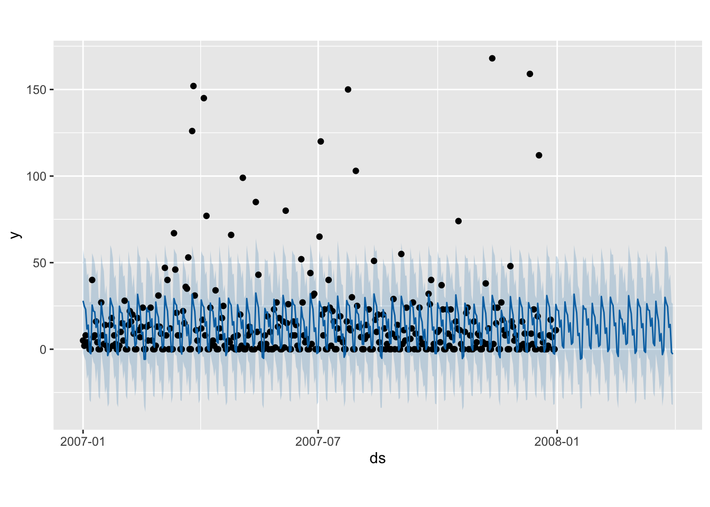
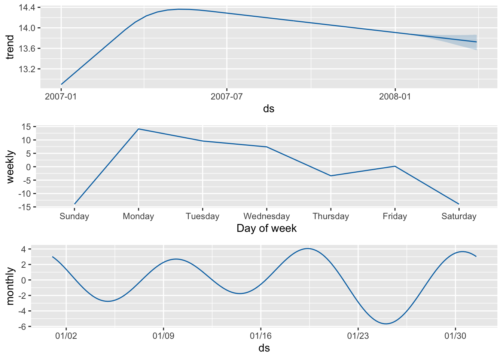

Capítulo 5 Modelo Prophet
El modelo Prophet consiste en usar un modelo descomponible de series temporales y se estima utilizando un enfoque bayesiano para permitir la selección automática de los puntos de cambio y otras características del modelo y tiene en cuenta tres factores importantes: la tendencia, la estacionalidad y los días festivos. Estos componentes son combinados en la ecuación y(t) = g(t) + s(t) + h(t) +εt.
El valor de y pronosticado por el modelo en el momento t viene dado por la función y(t) y tiene cuatro componentes:
Componente de crecimiento o la tendencia generalg (t): Modela los cambios no periódicos. Los nudos (o puntos de cambio) para la tendencia lineal a trozos son seleccionados automáticamente si no se especifican explícitamente. Opcionalmente, se puede utilizar una función logística para establecer un límite superior en la tendencia
Componente estacional s(t): representa la suma de todos los componentes periódicos y consiste en términos de Fourier de los periodos relevantes. Por defecto, se utiliza el orden 10 para la estacionalidad anual y el orden 3 para la estacionalidad semanal.
Efectos de los días festivos h(t): representa uno o mas días que ocurren en calendarios irregulares o se pueden añadir como variables ficticias simples.
Error εt: es el término que engloba todos los demás cambios que no ajustan los demás componentes del modelo. Es el termino de ruido blanco.
El modelo se estima utilizando un enfoque bayesiano para permitir la selección automática de los puntos de cambio y otras características del modelo.
5.1 Generacion del modelo
Debido a que el modelo Prophet no opera directamente sobre objetos del tipo ts de R, sino sobre data frames, se utiliza una versión tabular de la serie temporal (serie_diaria). Para que Prophet pueda identificar correctamente las variables de fecha y valor, es obligatorio que las columnas se llamen ds (date stamp) y y (value). Por lo tanto, se realiza una transformación previa del conjunto de datos, renombrando las columnas correspondientes. Esta preparación garantiza que Prophet interprete adecuadamente la estructura temporal de la serie para modelar tendencias, estacionalidades y generar pronósticos de forma efectiva.
A continuación se genera el modelado de la serie temporal diaria de ausencia laboral en horas, y que incluye un componente de estacionalidad semanal para capturar patrones con esa frecuencia.
Debido a las características de los datos, se deicidió incluir un componentes mensual que odría mejorar el modelo. El siguiente código muestra la inicialización del modelo y su configuración.
#Debido a que prophet se ejecuta sobre un dataframe y no un archivo tipo ts se usa serie_diaria.
#Prophet requiere usar nombres específicos para las columnas, se hace la respectiva transformación.
# Validar columnas
names(serie_diaria) <- c("ds", "y")
# Filtrar valores válidos
serie_diaria <- serie_diaria[!is.na(serie_diaria$ds) & !is.na(serie_diaria$y), ]
# Confirmar que hay datos después del filtrado
if (nrow(serie_diaria) == 0) {
stop("El dataframe `serie_diaria` está vacío después de limpiar valores NA.")
}
# Asegurar que `ds` es Date y `y` es numérico
serie_diaria$ds <- as.Date(serie_diaria$ds)
serie_diaria$y <- as.numeric(serie_diaria$y)
# Inicializar modelo
model_prophet <- prophet::prophet (
weekly.seasonality = TRUE,
daily.seasonality = FALSE,
yearly.seasonality = FALSE,
seasonality.mode = 'additive',
seasonality.prior.scale = 10
)
# Agregar estacionalidad mensual
model_prophet <- add_seasonality(
model_prophet,
name = "monthly",
period = 30.5,
fourier.order = 3
)
# Ajustar el modelo
model_prophet <- fit.prophet(model_prophet, serie_diaria)Interpretación del modelo Prophet
$growth = “linear”:El modelo asume que la tendencia de la serie crece de manera lineal con el tiempo. Si quisieras un crecimiento que se estabiliza (sigmoide), usarías “logistic”.
$changepoints = NULL y $n.changepoints = 25: Prophet no ha identificado aún los puntos exactos de cambio en la tendencia (aún no se ha entrenado o guardado esa parte), pero está configurado para buscar hasta 25 posibles puntos de cambio dentro del rango permitido.
$changepoint.range = 0.8 Los changepoints (cambios estructurales en la tendencia) se buscarán dentro del 80% inicial de la serie temporal. Esto previene que el modelo ajuste cambios cerca del final, donde hay más incertidumbre.
$yearly.seasonality = “auto”, $weekly.seasonality = “auto”, $daily.seasonality = “auto”: Prophet intentará detectar automáticamente si hay estacionalidades de tipo anual, semanal o diaria, en función de la longitud de la serie y la frecuencia de los datos. En el caso de ausentismo se entiende que los datos son diarias y según se analizo en capítulos anteriores la estacionalidad es semanal.
$holidays = NULL: No se han incluido festivos o eventos externos como regresores adicionales. Puedes añadirlos manualmente si crees que afectan la serie (por ejemplo, días no laborales en una serie de ausentismo).
$seasonality.mode = “additive”: La estacionalidad se suma a la tendencia (modelo aditivo). Si los efectos estacionales crecen o decrecen con la tendencia, podrías usar el modo “multiplicative”.
$changepoint.prior.scale = 0.05: Controla qué tan flexible es el modelo para detectar cambios de tendencia. Un valor bajo como 0.05 penaliza cambios bruscos, suavizando la tendencia. Valores más altos permiten más cambios estructurales.
$seasonality.prior.scale = 10: Determina cuánta libertad tiene el modelo para ajustar estacionalidades. Un valor de 10 es bastante flexible.
$interval.width = 0.8: Los intervalos de predicción se generarán con un 80% de confianza.
$uncertainty.samples = 1000: Se generan 1000 simulaciones para calcular la incertidumbre en los pronósticos.
$mcmc.samples = 0: No se usó muestreo bayesiano MCMC. Prophet ajusta los parámetros con máxima verosimilitud de forma más rápida (por defecto).
5.2 Predicción
A continuación se procede a hacer la predicción a partir del modelo entrenado. Sin embargo, hay que tener en cuenta que las predicciones a largo plazo (como un año) se vuelven más inciertas, porque no hay datos reales para “anclar” la tendencia reciente y el modelo Prophet proyecta con base en la tendencia lineal y estacionalidades pasadas, que pueden cambiar. De igual forma, los intervalos de confianza (yhat_lower, yhat_upper) se vuelven más amplios.
Por esto, para este ejercicio solo se pronostica para un periodo de 90 días (3 meses), que corresponderían al primer trimestre del año 2008. De esta forma las predicciones están más cerca de los datos conocidos y la estacionalidad semanal se proyecta de forma más confiable con menor acumulación de error.
En primera instancia se usa la función make_future_dataframe que crea un dataframe con fechas futuras que extiende el conjunto de datos históricos del modelo, pero no hace predicciones. En este caso extiende las fechas por 90 días en la columna ds incluyendo las fehcas de los datos originales.
# Construcción de dataframe con las fechas de los futuros periodos
future <- make_future_dataframe(model_prophet, periods = 90)
tail(future)## ds
## 450 2008-03-25
## 451 2008-03-26
## 452 2008-03-27
## 453 2008-03-28
## 454 2008-03-29
## 455 2008-03-30A continuación se calculan las predicciones y_hat y los intervalos de incertidumbre para las fechas en future a partir del modelo entrenado (model_prophet) y lo aplica sobre las fechas future. El dataframe devuelto (forecast) incluye las columnas:
- ds (fecha)
- yhat (predicción)
- yhat_lower & yhat_upper (intervalo de confianza)
# Predicción de los valores futuros según el modelo generado, la variable y_hat es la predicción
forecast <- predict(model_prophet, future)
tail(forecast[c('ds', 'yhat', 'yhat_lower', 'yhat_upper')]) ## ds yhat yhat_lower yhat_upper
## 450 2008-03-25 26.815922 -0.1777552 58.97647
## 451 2008-03-26 24.641244 -5.3191383 55.30522
## 452 2008-03-27 12.628969 -16.3998575 39.77223
## 453 2008-03-28 14.287679 -13.8409764 43.27521
## 454 2008-03-29 -1.746538 -31.7534695 27.03004
## 455 2008-03-30 -2.857669 -32.1631176 26.19366
El gráfico de la predcción del modelo muestra una oscilación clara y regular en forma de picos y valles que se repite cada 7 días, lo cual indica que el modelo detectó una estacionalidad semanal, como se esperaba. Hay varios puntos negros muy por encima de la línea azul y del intervalo de confianza. Estos son días con picos inusuales de ausentismo, que el modelo no logra predecir bien. Por ejemplo, a mediados de 2007 y de nuevo hacia fines de año. Esto se vió también en el capítulo 4 cuando se construyó el modelo ARIMA.
Adicionalmente, no se observó una tendencia claramente creciente o decreciente pues la línea azul parece mantenerse estable, lo que indica que Prophet no identificó una tendencia lineal fuerte en los datos.
Respecto a la predicción, se observa que el intervalo de incertidumbre se ensancha gradualmente, lo que es esperado: el modelo es menos confiable mientras más lejos proyecta.
# se crea un grafico para observar la tendencia, estacionalidad semanal y estacionalidad anual
prophet_plot_components(model_prophet, forecast)
El gráfico de descomposión confirma los resultados mencionados anteriormente, a nivel semanal se evidencia el efecto del ausentismo a inicios de semana, con un mayor número de horas y menos frecuente hacía el final de la semana. A nivel anual pareciera haber una tendencia hacía la disminución en el número de horas de ausentismo. De igual manera, la predicción muestra el aumento en la incertidumbre a medida que se amplia el horizonte de predicción. A nivel mensual pareciera indicar un patrón constante en todas las semanas, excepto en la última semana del mes con una disminución en el total de horas de ausentismo.
# Se miran las escalas temporales con un grafico interactivo
dyplot.prophet(model_prophet, forecast)## Warning: `select_()` was deprecated in dplyr 0.7.0.
## ℹ Please use `select()` instead.
## ℹ The deprecated feature was likely used in the prophet package.
## Please report the issue at
## <https://github.com/facebook/prophet/issues>.
## This warning is displayed once every 8 hours.
## Call `lifecycle::last_lifecycle_warnings()` to see where this
## warning was generated.